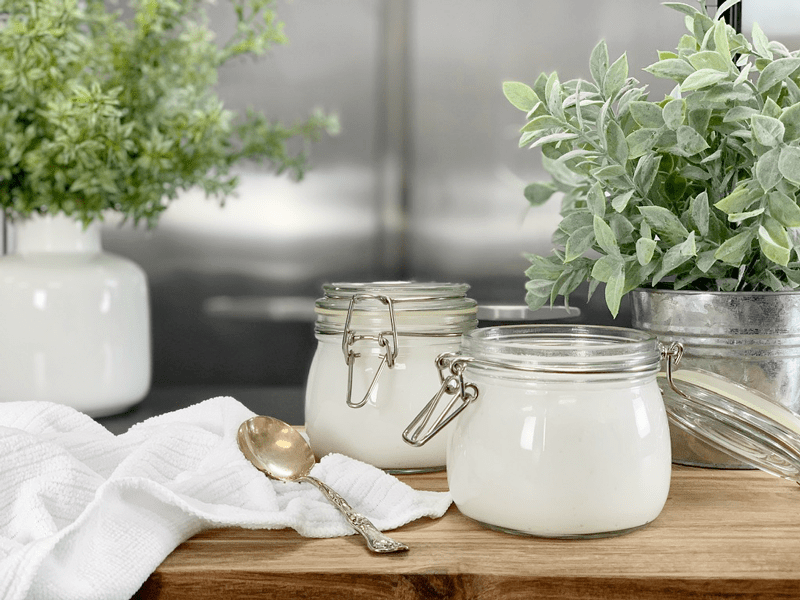
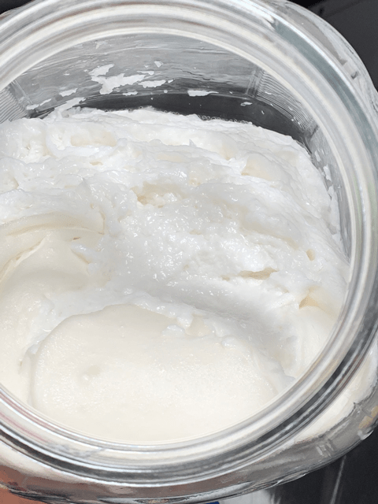
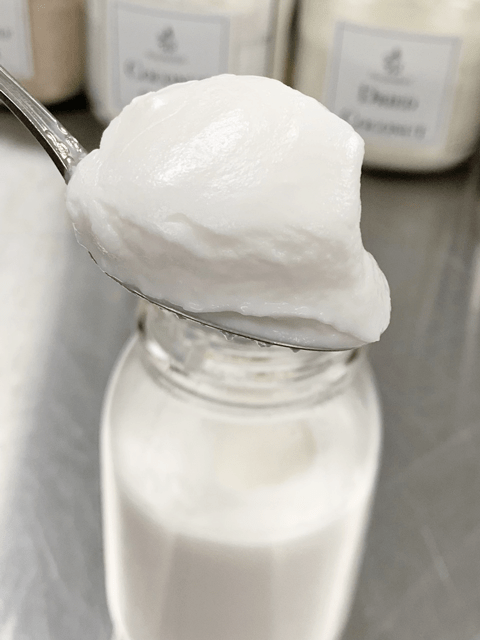

L. Reuteri Yogurt
Back in January of this year (2019), a friend of mine asked if I would try making a specific type of yogurt called L. Reuteri, that Dr. William Davis (author of Wheat Belly) recommended. There had been a posting about the amazing health benefits that stemmed from a probiotic called BioGaia Gastrus, which is made with a specific strain of Lactobacillus Reuteri ATCC PTA 6475. If you see me on the street corner, please don’t ask me to remember that. hehe

In Dr. Davis’ post, he shared about the positive effects people were experiencing. Everything from the suppression of the appetite, to an increase in skin thickness and skin collagen, along with acceleration of skin healing, as well as an increase of oxytocin. He stated that “with the caloric reduction, increased skin health, increased bone density, fat loss, muscle gain, reduced insulin resistance, etc.—and you have one of the most powerful anti-aging, youth-preserving strategies I have ever come across.” If you want to “geek” out and learn more about this, check out Dr. Davis’ post (here).
Ingredients Required
As I was reading through his posting, I saw that he used raw goat milk but further down in the write up he mentioned that you can use coconut milk. My first inclination was to use Young Thai coconut meat. That is my “go-to” base for our raw yogurts. I put together a shopping list, hopped online, and started placing orders. Chances are that you won’t find this probiotic on the grocery store shelves and after much searching, I found Amazon to be the best price since we get free shipping with Prime. It seems spendy at first glance (30 tabs for $25) but it goes further than you might expect. The first batch of yogurt takes 10 tablets, but you can make up to 5 batches of yogurt by removing 1/4 cup of cultured yogurt and putting it in the next batch you make. You can use this 1/4 cup of yogurt to start another batch right away, or you can keep it stored in the fridge for a week (maybe longer, haven’t tested that).
I also had to order more frozen Young Thai coconut meat. I order mine through a company called Exotic Super Foods. I always talk about this company when I create recipes with young Thai coconut meat because it is by far the best quality I have ever had. I have been a faithful customer for over seven years. If you want to read more about my experience with opening case after case of store-bought coconuts, click (here) after reading that you will understand why I changed to purchasing my coconut meat from these guys.
The recipe below calls for inulin which is a type of soluble fiber found in many plants. It is a “fructan” – meaning that it is made up of chains of fructose molecules that are linked together in a way that cannot be digested by your small intestine. Instead, it travels to the lower gut, where it functions as a prebiotic, or food source for the beneficial bacteria that live there. (1) Also, he suggested adding 1 Tbsp of sugar to the mix if using coconut milk so that the bacteria had more food to feed on. I used organic white sugar cane.
Our Experience
I am used to making raw yogurts so the process was super easy. After it was cultured, it did look a bit strange, compared to what I am used to. It separated, looking extremely lumpy, and downright odd. That didn’t deter me though. Once it was cultured for about thirty hours, I poured it back into the blender and within seconds it was back to being smooth and creamy.
At first, I thought it was too runny, but the beauty of young Thai coconut meat is that it thickens up once chilled. So, the next day, I dipped my spoon in and out came a super fluffy texture. See the photos below. As I mentioned above, I was able to make five batches of yogurt off of the first batch, which made things go even more lickety-split. And each batch seemed to stay nice and thick. Flavor-wise, it tasted just like my other home cultured yogurts.
As far as physical effects… let me say that the first batch was the most powerful and it cleaned me out, which was interesting because I have a body that doesn’t like to “let go” if you know what I mean. Both Bob and I ate it every morning, and it seemed to really stir up the noises in the belly. We didn’t notice any great appetite suppressing effects, but maybe we didn’t pay attention close enough. Just the other day, Bob asked me to make more, which was odd because he normally doesn’t get a “taste” for yogurt, so I started the process again and thought that I would share it with you. I hope you enjoy this. Please leave a comment below. Have a blessed day, amie sue
 Ingredients
Ingredients
Probiotic Slurry
Preparation:
-
In a blender add the coconut flesh and the water that was in the bag (which measured out to 1/2 cup). Set aside.
-
In a large glass/ceramic bowl, combined 1/2 cup of water, inulin, sugar, and the crushed probiotic tablets to create a slurry.
- I used a mortar and pestle to crush the tablets down to a powder.
-
Mix thoroughly and make sure the prebiotic and sugar are dissolved. Add to blender with the coconut and blend until creamy smooth.
-
After blending, add enough water to hit 4 cups in the blender.
- I did this because Dr. Davis used 4 cups of raw goat milk so I felt the need to match his measurements.
-
Pour into a clean glass container that is roughly twice as large as the coconut mixture volume, this will account for any rising of the mixture as it ferments.
-
Cover the top of the container with a double layer of cheesecloth and secure with a rubber band.
-
Slide into the dehydrator, set at 100 degrees (F), and ferment for 24-36 hours.
- If you don’t have a dehydrator, you can use an Instapot, or slide it into the oven with just the oven lights on. Test the temperature while doing this to make sure it is staying even. It’s amazing how much warmth the light can give off.
- When the culturing process is done, it will look odd, about a 1/3rd of it was water on the bottom of the jar, lots of bubbles, and looked nasty.
- Pour the mixture back into the blender and blend until creamy. The texture should be similar to drinkable yogurt. Put an airtight lid on and place it in the fridge. It will thicken up overnight.
- If you wish to make more, hold back 1/4 cup of the cultured yogurt and add it to a blender with the same measurements of young Thai coconut meat, and 1 Tbsp of sugar. I didn’t add inulin to the remaining batches.
Here’s the Scoopy-Doop
- If you don’t like coconut or can’t get a hold of it, you can use 2 cups of soaked, then drained, cashews instead.
- Start off slow (1/4 cup… working to 1/2 cup) when consuming this yogurt for the first time and if possible stay home for a while… JUST in case, it causes the green-apple-trots.
- You might experience that your first batch is a bit thinner than the subsequent ones that you make off of that first batch.
-

-
This is what it looked like right after culturing.
-

-
Here is the cultured and chilled yogurt the next day.
© AmieSue.com